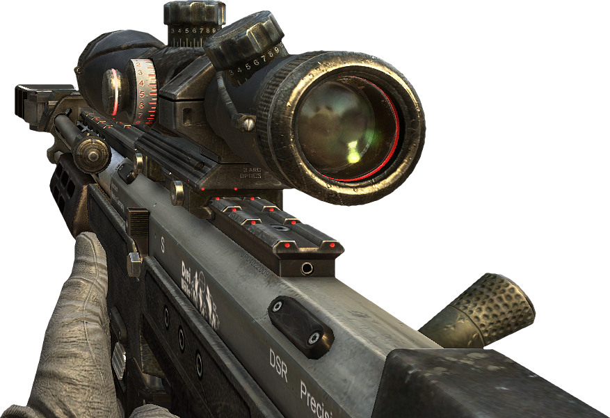

Kas yra šaunamasis ginklas?
Šaunamasis ginklas – rankinis ginklas, kuris sprogimo, suspaustų dujų (pvz., oro) slėgio ar stangraus elemento įtempimo jėga paleidžia sviedinį (kulka, šratas, strėlė ar kt.) arba kenksmingas dirginančias medžiagas. Šaunamieji ginklai paprastai skirstomi į šaulių ginklus ir artilerijos ginklus. Šaunamaisiais ginklais paprastai nelaikomi tokie stambūs ginklai, kaip raketos ir reaktyviniai sviediniai ir jų leistuvai, torpedos ir torpedų aparatai, nors kalbant apie juos naudojamas žodis šauti. Lietuvos Ginklų ir šaudmenų kontrolės įstatyme[1] nuo 2008 m. birželio 21 d. lankai ir arbaletai nebus laikomi šaunamaisiais ginklais. Dabar dar galiojančiame variante šaunamaisiais ginklais jie laikomi. Šiame įstatyme tiesiogiai neminima, ar artilerijos pabūklai, raketų leistuvai priskiriami šaunamiesiems ginklams. Įprastinė lietuviška sąvoka šaunamasis ginklas nesutampa su anglišku terminu small firearm ir rusišku огнестрельное оружие, kur abu reiškia 'parakinis šaunamasis ginklas'.
